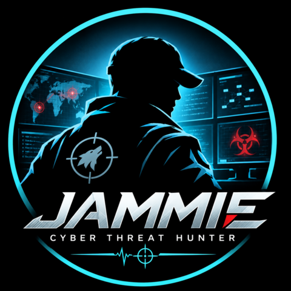

iamjammie · open-source security
Open-source, offline, MITRE ATT&CK-mapped tooling and knowledge for threat hunters and incident responders — a network analyser, a host triage tool, a hunting knowledge hub, a space-systems security framework, and an optical file transfer for air-gapped systems. Everything here is defensive, dependency-light, and free to audit.
The Hunt suite
Three companion projects that cover a hunt end to end — the knowledge to form a hypothesis, the host-side evidence, and the network-side evidence — all mapped to the same ATT&CK techniques.
The one-stop threat-hunting hub.
From "what is threat hunting?" to running hunts and shipping detections — theory and practical, copy-paste-ready material in one place.
Hunting threats through traffic patterns.
A single-file, fully offline web app that turns .pcap / .pcapng captures into
findings, carved artifacts, IOCs, a visual attack map and an IR report — zero network calls.
Hunting threats through host artefacts.
A dependency-free Python triage tool that collects host artefacts live on Windows and Linux and runs them through an ATT&CK-mapped engine, IOC sweep, fleet stacking and a timeline.
Better together
An incident rarely lives in one place. Form the hypothesis, pull host and network evidence, and line them up on the same ATT&CK technique — two confirmations beat one guess.
Pick a Hunt-Sage playbook and its ATT&CK techniques to hunt.
HostHunt collects the endpoint — persistence, processes, logs.
FluxHunt analyses the capture — beaconing, exfil, carved files.
Pivot on shared IOCs; both map to one ATT&CK kill-chain story.
Frameworks & tools
Original research in an adjacent domain, a unified frameworks intelligence portal, and a standalone tool for the air gap.
Space Protection, Exploitation, Continuity, Threat Response & Assurance.
A mission-first offensive, defensive and resilience assessment framework for space systems. Its primary unit is an attack-path state transition — Mission → Exposure → Positioning → Control → Survival → Transit → Manipulation → Mission Effect → Resilience — testable in an isolated range, digital twin or hardware-in-the-loop environment.
Offline file transfer across an air gap, by screen and camera.
Two self-contained HTML files. The isolated machine shows a file as a loop of QR codes; a phone reads it back, verifies the SHA-256 and hands it to the share sheet. Nothing crosses the gap but light, and nothing flows back in.
Connecting tactics. Decoding threats. Enabling defence.
A single offline-first HTML portal unifying MITRE ATT&CK, D3FEND, CAPEC, CWE/CVE, the Cyber Kill Chain and pentest methodologies — with cross-framework correlation, a knowledge graph, an ATT&CK-style matrix, learning paths and study mode.
Threat hunter & blue-team practitioner.
Detection engineering, threat hunting and incident response. Everything here is built in the open — issues, ideas and contributions welcome on any of the repositories.
Learning & resources
Community education resources maintained as forks.
Shared principles
No uploads, no live calls — evidence stays on the machine it's examined on.
FluxHunt is one HTML file; HostHunt is pure Python standard library.
Findings and playbooks carry MITRE ATT&CK techniques for triage and reporting.
Read-only analysis for responders — open source, free to audit and extend.
Use responsibly. The tools are defensive and heuristic: findings are demonstrated on synthetic data and can flag legitimate software. Validate against known-good baselines, and run them only on captures and hosts you are authorised to investigate.